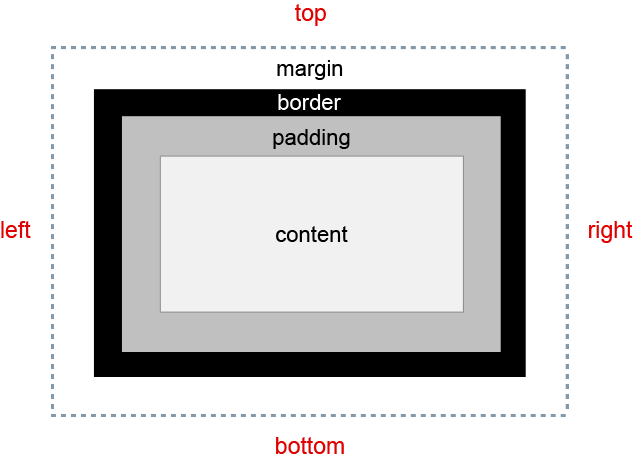

5. Common CSS Concepts
There are many CSS concepts and properties we use in day to day CSS work, lets dive into some of the common concepts used while working with CSS.
05.8. CSS box model: padding
- Padding is the `breathing space inside an element border` which holds the content aways from edge/border and allows readibility
- CSS Padding property is used to define the space between the element content and the element border
- `Padding is inside` and Margin is outside
- Padding can be defined either to Top, Right, Bottom, Left or to each side of an element
Box Model consists of properties like: Margins, Borders, Padding and content width, height (these properties make physical dimension of an element)
- Margin = Space outside/around an element
- Border = Rectangular outline/border surrouding an element/box
- Padding = Breathing space inside an element border
- Total width of an element: left border + left padding + content width + right padding + right border
The following diagram demonstrates how the margin, padding, and border CSS properties determines how much space an element can take on a web page:
